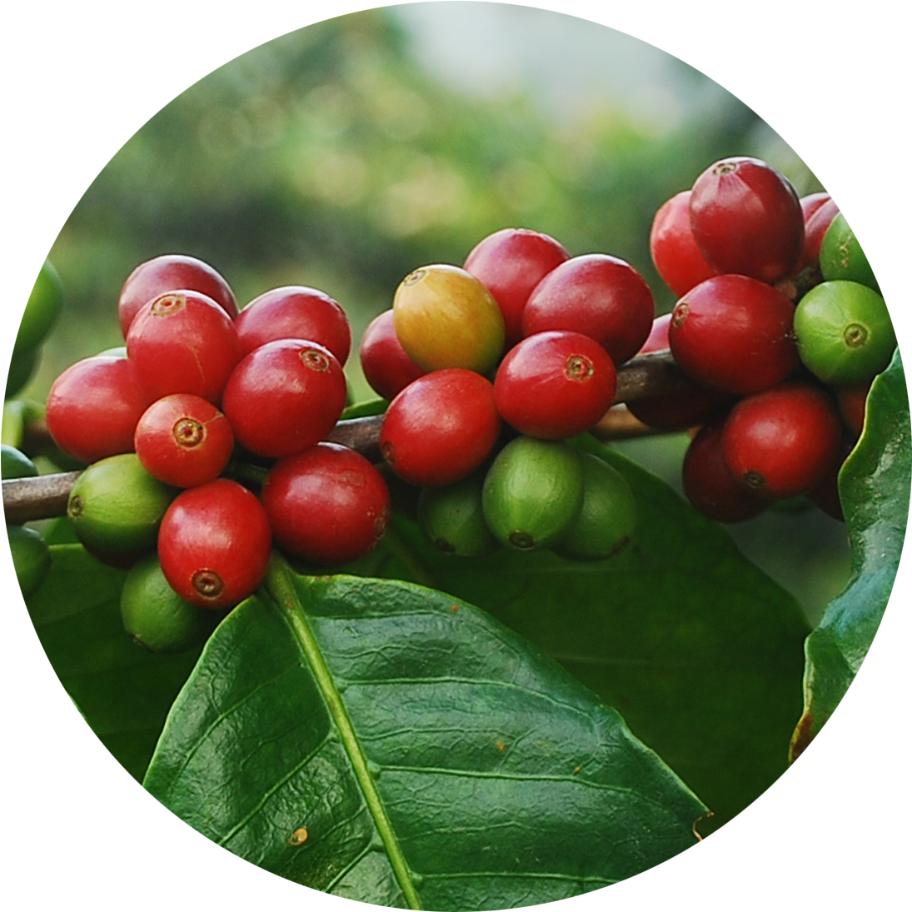
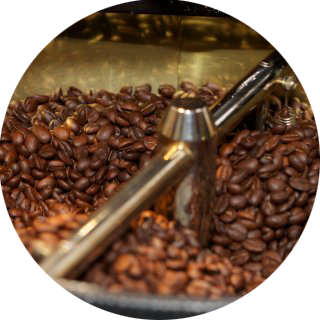
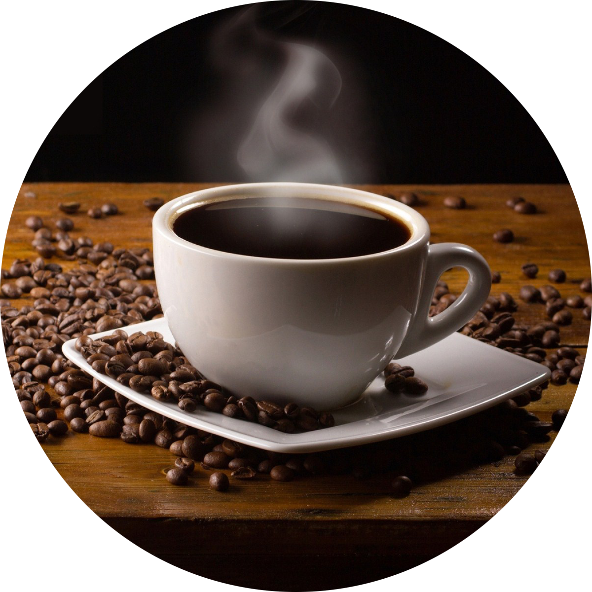

Den tradisjonelle metoden for å plante kaffe er å sette 20 frø
i hvert hull i begynnelsen av regntiden, rundt halvparten av
disse vil da elimineres naturlig. En mer effektiv
dyrkingsmetode som brukes i Brasil, er å drive fram
frøplanter i gartnerier. Disse plantes deretter ut etter
seks til tolv måneder. Kaffe plantes ofte sammen med andre
matvekster, for eksempel mais, bønner, eller ris i løpet av
de første årene. Av de to viktigste artene er arabica-kaffe (fra C.
arabica) generelt mer anerkjent enn robusta-kaffe (fra C. canephora),
robusta er gjerne litt mer bitter og har mindre smak, men bedre fylde
enn arabica. På grunn av dette er omtrent tre fjerdedeler av kaffen som
dyrkes over hele verden C. Arabica. Robustabønnene inneholder også om
lag 40-50 % mer koffein enn arabica. På grunn av dette brukes de som en
billig erstatning for arabica i mange kommersielle kaffeblandinger.
Høykvalitets robusta-bønner blir brukt i noen espressoblandinger for å
gi en fyldig smak, et bedre skumlag (kjent som crema), og for å senke
kostnadene. Coffea canephora er mindre utsatt for sykdom enn Coffea arabica og kan dyrkes i lavere høyder og varmere klima der arabica ikke vil trives. Robustastammen ble første gang samlet i 1890 fra Lomamielva, en sideelv til Kongo-elva, og ble formidlet fra Zaire til Brussel til Java rundt 1900. Fra Java ble planten spredt over større deler av verden, og i dag dyrkes robusta spesielt i Vest- og Sentral-Afrika.

Det neste trinnet i prosessen er brenning av grønne bønner. Kaffe selges vanligvis i brent tilstand, og med sjeldne unntak blir all kaffe brent før den blir konsumert. Det kan selges brent av leverandøren, eller det kan være hjemmebrent. Brenneprosessen påvirker smaken av drikken ved å endre kaffebønnen både fysisk og kjemisk. Bønnen minker i vekt ettersom fuktighet går tapt og øker i volum, noe som gjør at den blir mindre tett. Bønnens tetthet påvirker også kaffens styrke og krav til emballasje.
Den faktiske brenningen begynner når temperaturen i bønnen når omtrent 200°C, selv om forskjellige varianter av frø varierer i fuktighet og tetthet og derfor brennes i forskjellige hastigheter. Under brenning blir stivelse brytt ned, og forandret til enkle sukkerarter som begynner å brune, noe som endrer bønnens farge.

Kaffe kan brygges på flere forskjellige måter, som man kan dele opp i fire hovedgrupper etter hvordan vannet møter kaffepulveret.
Koking:
Tyrkisk kaffe er en gammel bryggemetode for kaffe, som fremdeles blir brukt mange steder i Midtøsten, Afrika, Tyrkia og Hellas. Vann puttes sammen med veldig fint malt kaffe i en kjele med liten åpning kalt ibrik (arabisk), cezve (tyrkisk), dzezva (serbo-kroatisk) som fortsatt er mye brukt på Balkan. Kaffen tas av varmen like før den når kokepunktet. Noen ganger lages kaffen sammen med sukker, noe som gir den en søtsmak, eller kardemomme. Resultatet gir en liten kopp med veldig sterk kaffe, med skum på toppen og et lag med kaffepulver på bunnen.
I Norge er bålkaffen eller turkaffen velkjent.
Trykk:
Espresso blir laget med varmt vann under høyt trykk og er basis for de fleste kaffedrikker, som caffè latte, cappuccino og mochaccino, eller den kan serveres alene. Den er en av de kraftigste formene for kaffe som regelmessig blir drukket. Den har en spesiell smak og bryggemåten lager en spesiell form for skum på toppen kalt crema. En espresso er omtrent 0,4 dl, men serveres ofte både dobbel og trippel.
En mokkakanne er en kanne med tre kamre, hvor det kokes vann i den nederste seksjonen, noe som skaper et trykk som fører vannet opp i det øverste kammeret gjennom det midterste kammeret hvor kaffepulveret ligger. Resultatet ligner mye på en espresso, men mangler crema og har litt mindre kraftig smak. Den varmes som oftest opp på en komfyr eller har egen varmekilde.
En vakuumkanne minner mye på mokkakannen i designet, men har bare to kammer med et rør mellom; et kammer for vannet og et kammer for kaffepulveret. Trykk gjør at vannet i det nederste kammeret presses opp i det øverste kammeret sammen med kaffepulveret. Etter en liten stund tas vakumkannen vekk fra varmekilden og et vakuum dannes i det nederste kammeret noe som drar den ferdig bryggede kaffen i det øverste kammeret tilbake.
Gravitasjon:
Filterkaffe (også kalt melittakaffe) blir laget ved å la varmt vann dryppe ned i et kaffefilter (av papir eller perforert metall) hvor kaffepulveret ligger. Styrken varierer med mengdeforholdet mellom kaffepulver og vann. Man kan helle vann manuelt eller bruke en kaffetrakter.
Steeping:
En presskanne (fransk: cafetière) er en høy og small glassylinder med et filter i enden av et stempel. Kaffepulveret og varmvannet blandes i sylinderen i noen minutter før stempelet presses ned og skiller kaffe og kaffepulver.
Kaffeposer er mye sjeldnere en den tilsvarende innretningen for te (tepose), siden de er mye større og uhåndterlige (det trengs mer kaffe i en kaffepose enn te i en tepose).